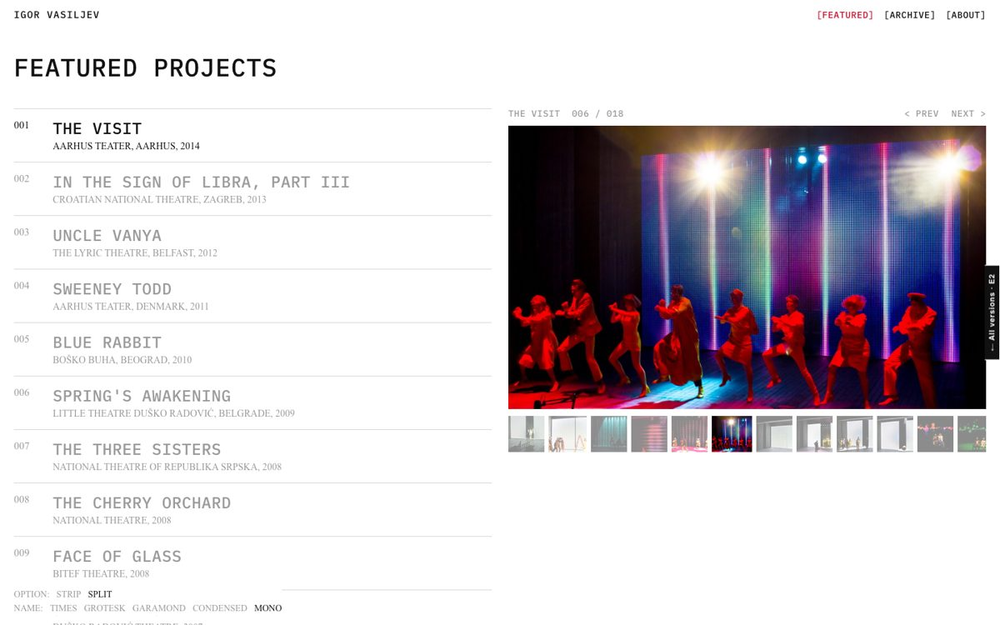
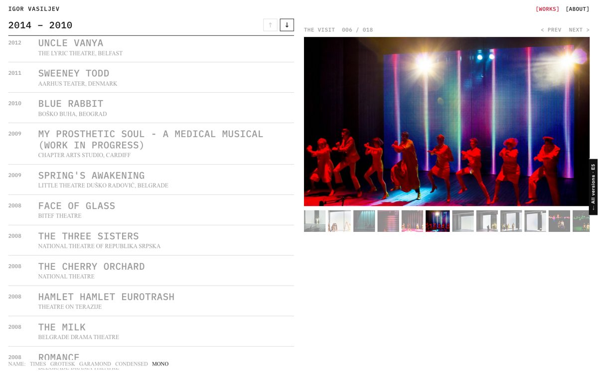

Prototypes built on the works, photos and credits from web-stage.org. Texts for each work aren't written yet. Not public: please don't share the link.
The home page shows ten featured projects: the list on the left, the photos on the right. Hover a title to see its photos; click it to open the credits. All works are on a separate Archive page, grouped by period.
Open →
One page with every work, newest first. The period stays at the top of the list as you scroll; the arrows jump to the previous or next period. Photos on the right, credits open in place.
Open →
The small switches at the bottom left are for comparing options: the font of the name (Mono is our pick), and the layout of some pages (home page, archive, a single work). Try them freely.